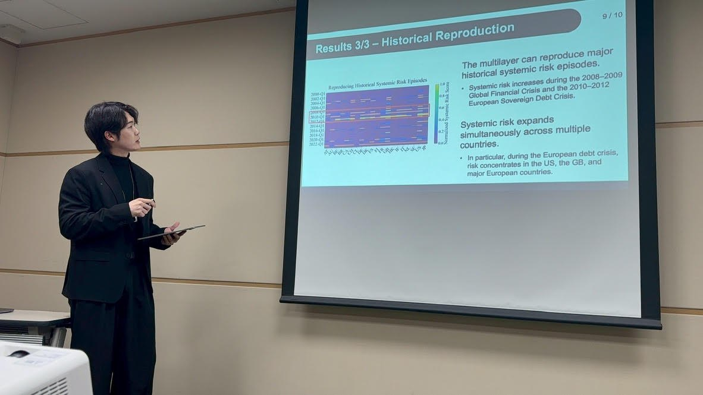

チェ・
ジュンヒョン
Junhyun Chae · 채준현
JRFM ’26筆頭著者の学術論文
6 / 443Young Author Award · AROB 2025
KO · JA · EN仕事で使う言語
01 — 仕事
金融機関のための
金融機関のための
カストディ基盤。
株式会社インタートレード（東証 3747）デジタルアセットチーム／東京
-
i.
HSM署名アダプタ
機関向けMPCカストディ基盤とHSMをつなぐPKCS#11アダプタを一から設計・開発し、実運用に導入しました。
PKCS#11 · HSM · MPCカストディ -
ii.
トークン運用の自動化
パブリックブロックチェーン上のトークン発行・償還業務を、AWSでエンドツーエンドに自動化しました。
AWS · トークン化 · 自動化 -
iii.
ベンダーとの技術窓口
海外カストディベンダーとの技術窓口を英語で担当しています。事業者の評価、NDA・契約レビューの支援、金融機関との橋渡しも行います。
英語 · ベンダー連携
株式会社インタートレード
東京 · 2026年4月 — 現在エンジニア（デジタルアセット・カストディ／HSM連携） 現在
- 社内でデジタルアセットチームに抜擢
- 機関向けMPCカストディ基盤とHSMを接続するPKCS#11署名アダプタを一から設計・開発し、実運用に導入
- AWSを用いて、パブリックブロックチェーン上のトークン発行・償還業務を自動化
- カストディ基盤ベンダーの技術窓口として、連携上の課題を英語で直接解決
- カストディ事業者の調査・評価、NDA・契約書レビューの支援、事業者と金融機関の橋渡し
- PythonとExcelによる社内業務の自動化ツールを開発（非エンジニアの同僚も使うコスト照合ツールなど）
エンジニア（FX取引システム） 最初の配属
- FX取引システムの開発・保守。データベース障害時にも顧客の取引を継続させるための障害テストなど
- レート取得ツールのPythonリファクタリングと、顧客向けレート取得アプリの開発
02 — 研究
金融ショックは
金融ショックは
国境をどう越えるか。
兵庫県立大学大学院での修士研究（指導教員：井上寛康 教授）

ショックの発生源
層の中 · DebtRank
層の間 · 閾値
モデルの仕組み
- 20か国について、銀行与信（BIS）と貿易（UN Comtrade）の2つの層をつくる。
- ショックは層の中でDebtRankにより広がる。
- 損失が閾値を超えると、もう一方の層へ波及する。
- 両方の層を考えると、リスクが高く見える国の顔ぶれが入れ替わる。
6 / 443
受賞 · 2025年1月
Young Author Award（AROB-ISBC 2025）
別府で開かれた学会で、参加者443名の中から選ばれた受賞者6名の1人。兵庫県立大学の大学院生として初の受賞です。
大学のお知らせ- 2026.1.21Multilayer Propagation of Cross-Country Systemic Risk: A Hybrid Model with Horizontal DebtRank and Vertical ThresholdsAROB-ISBC 2026（第31回）· 別府
口頭発表 · 英語 - 2025.10.18国際的システミックリスクのマルチレイヤー波及情報処理北海道シンポジウム2025 · 室蘭
ポスター発表 · 日本語 - 2025.9.10Cross-border Financial Distress via Multi-layer DebtRank電子情報通信学会ソサイエティ大会 · 岡山
口頭発表 · 英語 - 2025.1.22A Quantitative Analysis of Financial Distress Propagation in International Networks Utilizing DebtRank and a Multi-layer ApproachAROB-ISBC 2025（第30回）· 別府
口頭発表 · 英語 · Young Author Award
修士論文（2026）：マルチレイヤDebtRankを用いた国際ネットワークにおける金融リスク伝播の定量的分析
03 — 経歴
これまでの歩み。
学歴
- 兵庫県立大学大学院情報科学研究科 データ計算科学専攻 博士前期課程 · 2024〜2026
- 水原大学校コンピュータソフトウェア学科（工学士）· 2022〜2024 · GPA 4.11/4.5
その他の受賞
- ゴールドマン・サックス エンジニアリングワークショップFX取引シミュレーションの個人収益ランキングで4位 · 2024
- 成績優秀奨学金水原大学校 · 3学期（2022〜2023年）
資格
- Fireblocks Academy認定コース4件修了 · 2026
- 日本語能力試験 N12021
- 情報処理産業技師韓国産業人力公団 · 2019
スキル
カストディ·HSM / PKCS#11·MPC·トークン化·Solana·Python·TypeScript·Java·SQL·AWS·REST API·ネットワーク分析·DebtRank·システミックリスク
プロジェクト
- 多層DebtRankモデルJRFM論文のPythonコード（公開）
- LSTMによる株価予測学部の卒業プロジェクト（2人チーム）· NASDAQ・KOSPI銘柄の60日後を予測
04 — オフの日
三つの街、三つの言語。
- ソウル育った街 · コンピュータ工学を学ぶ
- 神戸修士課程 · 初めての論文と受賞
- 東京インタートレードでデジタルアセット基盤
韓国語が母語、日本語が仕事の言語、英語は海外ベンダーとやり取りする言語です。